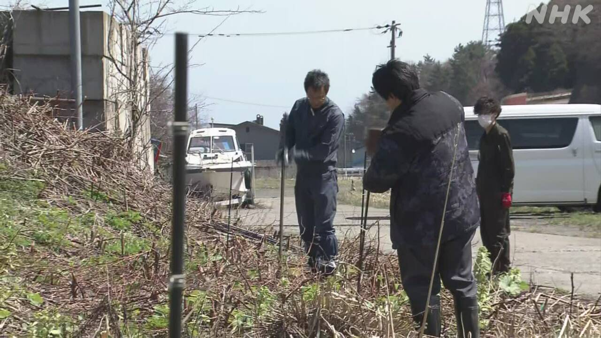
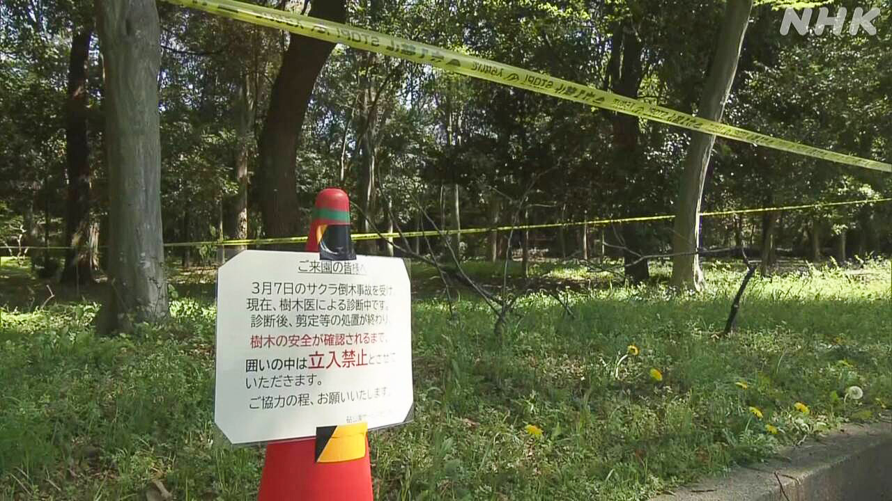
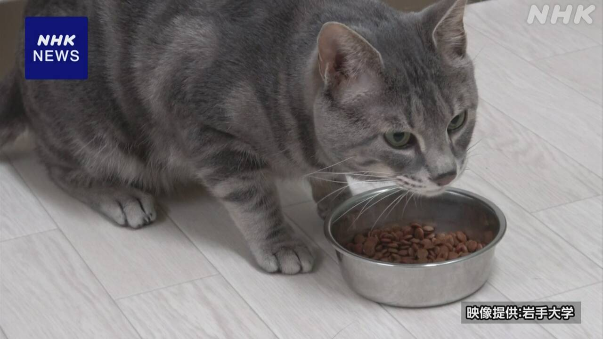

最新ニュース
1️⃣ イランの戦いは止まったがレバノンでは攻撃が続く
日本の時間の8日、アメリカとイランは、2週間、戦いを止めることにしました。
11日に、パキスタンで、戦いを全部終わりにするための話し合いをする予定です。
アメリカは、バンス副大統領が出ます。
バンス副大統領は「イランが核兵器を作らないようにすることが、話し合いの大切な目的の一つだ」と言いました。
しかし、レバノンでは、「ヒズボラ」とイスラエルが戦っています。ヒズボラはイスラム教のグループで、イランが活動を助けています。
8日のイスラエルの攻撃で、たくさんの人が亡くなったと、メディアは伝えています。
イランは、レバノンの戦いも止めなければいけない、と言っています。
2️⃣ 北海道 熊から人を守るため電気が流れる柵を置いた

冬のあいだ眠っていた熊は、春になると、目が覚めて動き始めます。
北海道福島町では、人が住んでいる所に熊が来ないように、電気が流れる柵を置きました。
柵は、人が住む場所と山の間に置きました。
福島町では、去年、新聞を配っていた男性が、熊に襲われて亡くなっています。
福島町は「熊の事故が起こらないようにしていきたいです」と話しています。
3️⃣ 東京都 公園で倒れそうな木を調べている

東京の世田谷区にある砧公園では、先月と今月、桜やコナラなどの木が倒れました。1か月の間に4回、倒れました。けがをした人もいます。
このため東京都は、ほかに倒れそうな木がないか、9日から調べています。木の専門家が、高さが3m以上ある5000本を調べます。倒れそうな木があったら、すぐに切ろうと考えています。
先月までの1年間に、東京都の公園などでは、木が、86本、倒れました。
東京都は、これから、砧公園以外の公園の木も調べる予定です。
4️⃣ 岩手大学「猫がごはんを残すのは匂いに慣れるからだ」

「なぜ、うちの猫はごはんを残すのだろうか」と不思議に思っている人も多いと思います。
岩手大学の研究グループは、12匹の猫で、調べました。
6回、食事をあげます。
同じ食事をあげ続けると、猫が食べる量は、だんだん減ります。
しかし、6回目、別の食事に変えると、食べる量が増えました。
同じ食事でも、違う匂いに変えると、食べる量は増えました。
研究グループは、猫はお腹がいっぱいだからではなく、匂いに慣れたから食べなくなったと言っています。
そして、「ペットフードをつくるときに、匂いについても考えると、猫の食事が豊かになると思います」と話しています。
- 〜こと
- 〜ことにする
- 〜予定だ
- 〜ため
- 〜予定
- 〜ように
- 〜ようにする
- 〜ている / 〜でいる
- 〜なければいけない
- 〜いけない
- 〜になる
- 〜ところ
- 〜や〜など
- 〜など
- 〜から
- 〜以上
- 〜がある / 〜がいる
- 〜まで
- 〜と思う
- 〜ても / 〜でも
- 〜について
vebaev.github.io
Generated: 2026-04-09 13:45:30 UTC